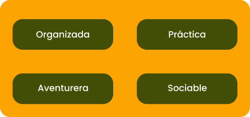
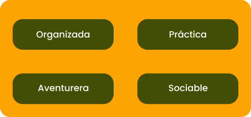

¡Hola! Soy Manne
Nombre completo: Marianne Spath , soy una apasionada artista plástica con experiencia en pintura, dibujo e ilustración científica. Recibida en la UNLP Bellas Artes, en el ano 2004, con especializacicon en pintura y escultura. A lo largo de mi carrera, he explorado una amplia gama de técnicas y estilos para expresar mi visión única del mundo. Cada obra es una oportunidad para conectar con el espectador y compartir la belleza y la emoción del arte.
Estoy emocionada de compartir mi viaje creativo contigo.
¡Bienvenidos a mi mundo!
En mis pinturas, me gusta experimentar con una variedad de técnicas, desde el impresionismo hasta el realismo, buscando siempre nuevas formas de expresar mis ideas y emociones. Utilizo pinceles y espátulas para crear texturas intrigantes y capas de color, mientras que también juego con la luz y la sombra para dar profundidad y vida a mis obras.
En cuanto a la ilustración científica, mi enfoque es meticuloso y detallado. Utilizo técnicas de dibujo a lápiz y tinta para capturar con precisión la anatomía y la estructura de los sujetos, ya sean plantas, animales o fenómenos naturales. Mi objetivo es combinar la precisión científica con la belleza artística, creando ilustraciones que no solo sean informativas, sino también visualmente impactantes.
Ya sea que esté pintando un paisaje impresionante o ilustrando una especie rara de insecto, me comprometo a llevar mi pasión por el arte y la ciencia a cada obra que creo. Estoy emocionada de compartir mi proceso creativo contigo y de explorar juntos el maravilloso mundo del arte y la ilustración científica.
 
